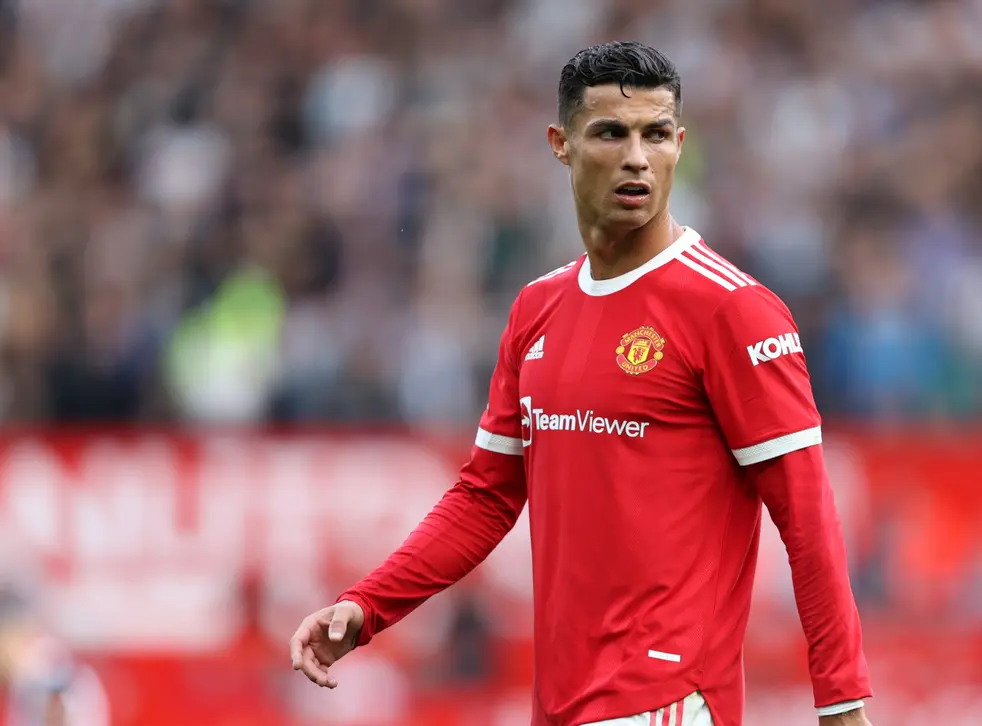

Welcome to my Cristiano Ronaldo Fanpage
Cristiano Ronaldo: Goals by Club
- Real Madrid - 450 Goals
- Manchester United - 123 Goals
- Juventus - 101 Goals
- Sporting CP - 5 Goals
Cristiano Ronaldo's Domestic Trophies (As of 2020)
- Five Champion's Leagues
- Four FIFA Club World Cups
- Three Premier Leagues
- Three UEFA Super Cups
- Five Champion's Leagues
- Two La Liga Titles
- Two Copa Del Reys
- Two English League Cups
- Two Spanish Super Cups
- Two English Community Shields
- Two Serie A Titles
- One Italian Super Cup
- One FA Cup
- One Portugese Super Cup


ronaldo's early years
Cristiano Ronaldo dos Santos Aveiro was born on February 5, 1985, in Portugal. His middle name, 'Ronaldo,' was inspired by his father's favourite American actor, Ronald Reagan. He has always enjoyed football and has done so since he was a child. His talent, excitement, and love for the game quickly became clear.
Cristiano Ronaldo Official Website
Click here to read his bio
Siuuuuuuuuuuuuuuuuuuuuuuuuu